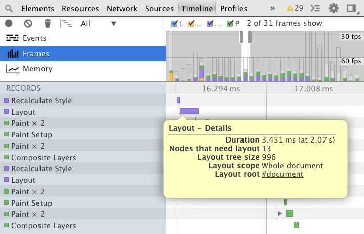

The component approach
by Wilson Page / @wilsonpage
- Today I'm going to talk about a front-end approach I've been taking in recent years
- I **call this approach** 'the component approach'
- **Next:** A bit of background...
Break pages into chunks...
everything's a component
- Essentially we devide our pages into pieces
- We don't have some parts of the page as components and some not.
- Everything is a component.
Component?
Definition
Encapsulation
Communication
Performance
Styling
Responsive
- Physical components
- 'FruitMachine'
- It's not always obvious.
- Aides encapsulation, untangled achitecture
- Portabile and water-tight.
- Responsive: range of screen sizes.
"A part that combines with other parts to form something bigger"
- Let's have a look at an example of real life component, and what we can learn from it.
- Starter motor that you'd find in the bonnet of your car
- Input => electric current. Output => Turning cog
- Black box, implementation is hidden. **It's encapsuldated**.
- Components manufactures all over the world
- A lot can be learnt from this established manufacturing process
- Let's take a look at a more familiar component.
<video>
- If you've used the video-element,
- you've already worked with components.
- Great example of how components should be designed.
- Proof that designing in the right way can make components usable in infinite ways.
Public API
video.play()
video.pause()
video.load()
- The interface that we use to control the component
Events
'ended'
'error'
'playing'
'progress'
'waiting'
- Emits numerous events
- We can listen to an react when the component tells us something has changed
Markup - HTML
Styling - CSS
Behaviour - JS
- 3 Ingredients that form a component:
- Markup: Structure and content
- Styling:
- Behaviour:
Encapsulated
Controllable
Informative
Configurable
Reusable
- The characteristics of a good component:
- Complexity hidden
- Give the user control
- Notify us when things change
- Shouldn't attempt to work perfectly out of the box
- Create as many as we like
You don't need a framework to get started with components
- Infinate ways to define a 'component'
- You don't need a framework to get started
var MyComponent = function() {
this.el = document.createElement('div');
};
MyComponent.prototype.render = function() {
this.el.innerHTML = 'hello world';
};
var component = new MyComponent();
component.render();
document.body.appendChild(component.el);
- Instantiable 'class', we can create as many as we need.
- Root element DOM handle, marks the boundary
- Render injects HTML into the root element
Why use a framework then?
Consistent codebase
Interoperability
Abstract repetition
- Consistent codebase
- Familiarity across team
- Without guidelines, on large teams, things can get messy
- Enable interoperability
- Consistent API means components can work together
- With a basic known API, we can write plugins
- Abstract repetition
- Tackle problems centrally
FruitMachine
- At the Financial Times we wrote FruitMachine
- Provided us with a consistent way to define and assemble view components
'A lightweight library for defining and assembling UI components'
var MyComponent = fruitmachine.define({
name: 'my-component',
template: function() {
return 'hello world';
}
});
// Usage
var component = new MyComponent();
component.render();
component.appendTo(document.body);
- Here is an example of a basic view
- template is just a function
- So why write our own library...?
Why did we write our own?
- We wanted something fully tailored to our needs.
- We wanted to know the code-base inside out.
- But perhaps it was just the 'control-freak' nature of our team
- Let's tak a look at what our requirements were...
'Retro-fittability'
- Large codebase, application rewrite is unfeasible.
- New components has to sit alongside old legacy UI.
- Had to be light, un-costly to experiment
- Gradually spread across code-base
- FruitMachine now renders every view in the FT web-app
Declarative layouts
- Not just defining the components, but also the assembly.
{
"module": "layout-a",
"children": {
"slot1": {
"module": "header",
"model": {
"title": "My Web App"
}
},
"slot2": {
"module": "big-story",
"model": {
"title": "Story title",
"body": "Story body..."
}
},
...
}
}
var layout = fruitmachine(layoutJSON);
layout
.render()
.appendTo(document.body);
{{{ slot1 }}}
{{{ slot2 }}}
- The template for the 'layout-a' module
Server-side rendering
- Wasn't a immediate requirement
- Didn't want FM to limit what was possible in the future
- **Next:** Advantages of server-side rendering?
Crawlable content
Faster 'time to content'
Provide a <noscript> experience
- Search engine spiders
- Don't have to wait for JavaScript
- Support a basic experience, and progressively enhance website to app.
- What did this mean for fruitmachine...?
Client & server share definitions
All views rendered as strings
Client enhances server generated HTML
- This mean that all views had to be rendered a strings
- Without a DOM we render HTML strings, **fast**.
- Sent down the wire, **Brought to life** on the client
Encapsulation
- What does 'encapsulation' mean...?
'The condition of being enclosed
Why is encapsulation good?
Promotes reuse
- When components don't depend on **outside conditions**
- They can be dropped anywhere
- Makes reusing chunks of UI easy
Decoupled from application
- **Untangle** our code-base
- Making applications easier to **maintain**.
Lower barrier to entry
- By reducing required scope of understanding
- New devs can dive straight into an app
- need only understand the small component their task concerns
- Make changes without fear of breaking other unrelated parts
Improve sense of ownership
- Devlopers **care more** when they feel **ownership/accountability**
- Ownership can get lost as **teams/apps grow**
- Making developers owners of components can help boost lingering enthusiasm
- **Next:** Quote captures the problem that encapsulation solves...
"The more tied components are to each other, the less reusable they will be; and the more difficult it becomes to make changes to one, without accidentally affecting another"
- Rebecca Murphey, jQuery Fundamentals.
- Enough about why it's good.
- **Next:** Let's walk through an example of a component that **isn't encapsulated**, and see how we can **improve it**.
// Component Code
var MyComponent = function() {
var myElement = document.querySelector('.my-element');
this.el = document.createElement('div');
this.el.style.height = myElement.clientHeight + 'px';
};
// Application code
var component = new MyComponent();
document.body.appendChild(component.el);
- Spec: Match height of 'my-element'
- This component is not encapsulated
- document is out of scope
- **Next:** Let's improve this...
// Component Code
var MyComponent = function(options) {
this.el = document.createElement('div');
this.el.style.height = options.height + 'px';
};
// Application Code
var myElement = document.querySelector('.my-element');
var height = myElement.clientHeight;
var component = new MyComponent({ height: height });
document.body.appendChild(component.el);
- Tightened up the scope, by injecting dependencies.
- Easier to unit-test.
- Let's summarise what we've learnt...
Treat each component as a 'mini-app'
Pass/inject outside dependencies
Ignorance is bliss
- In-penetrable boundary
- This take me onto my next topic...
Communication
- Well architected 'communication' is critical to keeping components encapsulated
- We need to be able to talk to our components, and our components need to be able to talk to us.
- Communication is two-way
API & Events
- Our application talks to its components using API
- Our components talk to our application using events
- FruitMachine components all have event logic mixed in
Your app should control its components, never the reverse.
- Let's take a look at an example of how good use of communication can 'decouple' components from application
var app = require('app');
function MyImage(options) {
this.el = document.createElement('img');
this.el.src = options.src;
this.el.addEventListener('click', app.showGallery);
};
// App code
var MyImage = require('my-image');
var image = new MyImage({ src: 'image.jpg' });
- Component depends on our application
- Means can't be reused
- Circular dependencies:
- Can break builds
- Tangled code-base
- It's tempting to call app code; it's so close, don't!
function MyImage(src) {
var self = this;
events(this); // <=
this.el = document.createElement('image');
this.el.src = options.src;
this.el.addEventListener('click', function() {
self.fire('click'); // <=
});
}
var MyImage = require('my-image');
var image = new MyImage({ src: 'image.jpg' });
image.on('click', showGallery); // <=
Events are awesome!
...but know when they're not appropriate
// Don't describe intention
this.fire('showgallery');
// Describe what happened
this.fire('click');
// ... and let the app decide what to do
image.on('click', showGallery);
API to cause something to happen
Events to signal something has happened
Fire from where the event happened
Communication rule of thumb:
- Use API to cause something to happen
- Use events to signal something has happened
- Events should be fired where they happened
Bubbling
- If you're familiar with DOM events you'll be aware of the concept of 'bubbling'
- Is when events rise up through the layers of the DOM
- We introduced bubbling events to FruitMachine:
- Decouple application controllers from components
- Layouts of arbitrary components
- Example...
var image = layout.module('my-image');
if (image) {
image.on('click', showGallery);
}
FruitMachine introduced event propagation to nested components
layout.on('click', showGallery);
layout.on('click', 'my-image', showGallery);
- Good communication helps solve tangled, circular dependencies.
- The application entry point is the trunk
- Modules are required, that require other modules... This forms branches.
- Circular dependencies occur when a module 'a' => 'b' => 'a'.
- The equivalent of a branch rejoining the trunk.
Performance
- We have a dreamy component architecture, but is it still fast?
With hidden implementation, we forfeit some control
- By hiding implementation details inside components takes away some control from the application.
Components have full access to the DOM (which can be dangerous)
- The DOM is shared by all our components.
- DOM is **tempramental**, we need to be nice to it.
Layout is expensive.
- Layout is the operation a browser performs to calculate the size and position of each element.
- We found layout to be our biggest performance bottleneck.
componentA.innerHTML = 'Component A'; // <= Write
componentA.clientHeight; // <= Read (reflow)
componentB.innerHTML = 'Component B'; // <= Write
componentB.clientHeight; // <= Read (reflow)
componentC.innerHTML = 'Component C'; // <= Write
componentC.clientHeight; // <= Read (reflow)
- This example illustrates the problem we were having
'Layout thrashing'
How can we prevent it...?
FastDOM avoids layout thrashing, by batching DOM reads & writes.
fastdom.write(function() {
componentA.innerHTML = 'Component A'; // <= Write
fastdom.read(function() {
componentA.clientHeight; // <= Read
});
});
fastdom.write(function() {
componentB.innerHTML = 'Component B'; // <= Write
fastdom.read(function() {
componentB.clientHeight; // <= Read
});
});
- Wrap DOM write operation in `fastdom.write`.
- And each DOM read operation in `fastdom.read`.
- FastDOM schedules the work to be run on the next animation frame.
- It runs them in two batches, 'reads', then 'writes' to avoid thrashing.
'Layout' now occurs only once per frame
- Layout now only occurs *once*, per frame.
- Essentially FastDOM gives us an asynchronous, non-blocking DOM.
Layout boundaries
wilsonpage.co.uk/introducing-layout-boundaries
- One of the other performance boosts I cam across last year.
- A 'layout boundary' is a DOM node that can limit the scope of layout.
- When the DOM changes, browser doesn't have to layout on elements *outside* the boundary.
- NEXT: Let's have a look at the performance gains...
- Timeline profile 'post-render' layout
- Took 5.6ms
- Size of the layout tree 1814
- Layout scope/root is 'document'
- No layout boundaries were encountered
- NEXT: Let's look at the same operation with a layout boundary...
- Duration dropped from 5.6 to 1.6ms
- Layout tree reduced: 1814 -> 607 nodes
- Layout scope/root is our layout-boundary
300% improvement in layout performance
- On mobile, this make a big difference!

- Duration: 3.45ms
- 'layout tree size': 996 nodes
- Layout is about 5 times faster (0.6ms)
- 'layout tree size' has reduced (234 nodes)
- The 'layout root' has changed
Improved animation frame-rate
Not be display inline or inline-block
Not have a percentage height value.
Not have an implicit or auto height value.
Not have an implicit or auto width value.
Have an explicit overflow value (scroll, auto or hidden).
Not be a descendant of a <table> element.
- What defines a layout boundary?
- Some of that sounds complicated...
.my-component {
width: 100%;
height: 100px;
overflow: hidden;
}
- A percentage or pixel width
- A pixel height
- And overflow set to 'hidden'
- The **root element** of many of our components
- If this is still confusing, Paul Lewis made a tool called 'Boundarizr' which helps identify 'Layout Boundaries'.
- NEXT: Let's summarise...
Try a tool like FastDOM to harmonize thrashing components
Experiment with 'layout boundaries' to improve post-render layout performance
Styling
- We've got our components on the page and they're fast.
- Now we need to style them.
- Our main two goals are:
- **Portability**
- **Preventing leakage**
CSS is tricky to tame
'Componentising' makes things easier
In big applications:
- CSS is tricky to tame...
- ...but 'Componentising' makes things easier
- You could end up with 100s of files
- Relax, SASS will concatenate for us.
- Our directory structure is flat.
- All components created equal.
- Let's talk about our 'styling objectives'.
Maximise portability
Minimise leakage
- Portable: Drop a component anywhere
- Leakage: Prevent our styling accidentally leaking onto other components.
- Soon 'Shadow DOM' and 'Scoped stylesheets' will help
- NEXT: Now we must depend on 'pure discipline'
Pure discipline
- Let's look at different approaches to styling a simple component
- Address some of the issues frequently seen in the wild.
Headline
Body content
article { /* styles */ }
h1 { /* styles */ }
p { /* styles */ }
- This looks like bad news:
- Will affect every other `artice`, `h1` and `p`
- CSS is like coding with `window` globals in JS.
- In JS we have closures; in CSS there is no concept of scope...
- NEXT: So we need to fake it...
Headline
Body content
.my-component { /* styles */ }
.my-component .title { /* styles */ }
.my-component .body { /* styles */ }
.title { color: red; }
- Nothing complex, **namespacing** gives basic 'scope'.
- Styles will no longer leak.
- But: What if someone writes this... (fragment)
- Doesn't protect against poorly written styles by other.
- Using common class names leaves us open to attack.
- NEXT: We must protect ourselves from this carelessness!
Headline
Body content
.my-component {}
.my-component_title {}
.my-component_body {}
- There is now a very high probability our classes are **unique**, and we have prevented both leakage, and being leaked upon.
- Using prefixed classes negates the need for parent selectors
- Shorter selectors
- Portable selectors
- **NEXT:** Let's summarise...
In a responsive application, components need to change their appearance
@media covers styling,
Same markup
Different appearancesDifferent behaviours
var ArticleList = fruitmachine.define({
name: 'article-list',
breakpoints: {
'column': {
setup: function() {},
teardown: function() {}
},
'row': {
setup: function() {},
teardown: function() {}
},
'small': {
setup: function() {},
teardown: function() {}
}
}
});
Detecting breakpoints
- Inspired by article by Jeremy Keith
@media(orientation: landscape) {
.article-list:after { content: 'column' }
}
@media(orientation: portrait) {
.article-list:after { content: 'row' }
}
window.addEventListener('resize', function() {
var style = getComputedStyle(articleList.el, ':after');
style.content; //=> 'column'|'row'
});
We could now map JS breakpoints to CSS breakpoints
- It worked and it was relatively simple
- What I didn't know...
- I'd just implemented our biggest performance bottleneck.
window.getComputedStyle()
- When run several times per second, per component
- I'd created a monster.
- I needed to kill it before my team found out what I'd done
- Back to the drawing board...
window.matchMedia
- I had known for a while matchMedia could tell you whether a media-query matched the current document.
- What I didn't know was that you could listen for changes
var media = window.matchMedia('(min-width: 500px)');
media.addListener(function(data) {
alert('matches: ' + data.matches);
});
- It seemed perfect, so I set about work
var ArticleList = fruitmachine.define({
name: 'article-list',
media: {
'orientation: landscape': 'column',
'orientation: portrait': 'row',
...
},
states: {
'column': {
setup: function() {},
teardown: function() {}
},
'row': {
...
}
}
});
- `media` property to map a media-query to a 'state'
.my-component.column {
/* 'column' styling */
}
.my-component.row {
/* 'row' styling */
}
- Moved all media-queries into JavaScript and instead used classes to style the different states.
- Ensured styling and behaviours always remained in sync.
Can you re-use the same component with different breakpoints?
- Default breakpoints aren't always appropriate
- How can we re-use the same component with a different breakpoint configuration?
var peach = new Peach({
media: {
'orientation: landscape': 'column'
}
});
- Override media map per instance
- CSS breakpoints can't be easily overridden, JS can.
- I've reversed the media map.
Conclude
- Let's dilute what we've spoken about
- Some key points...
Tight scope to promotes reuse and reduces tangled code-bases
Use configuration to maximise usage
Expose a public interface
Use events to react to changes
Timeline your apps to keep an eye out costly DOM work
Smart CSS selectors for rock solid styling
Look to existing components (like <video>) for inspiration
window.matchMedia for 'behavioural' breakpoints
- Keep components tightly scoped. Promote reuse, reduce tangled code-bases
- Make components configurable to maximise their usage
- Expose a public interface so components can be controlled
- Use events to react to changes inside components
- Timeline your apps to keep an eye out costly DOM work
- Use smart CSS selectors for rock solid styling
- Look to existing web-components, like video, for inspiration
- `window.matchMedia` can help with 'behavioural' breakpoints
"The secret to building large apps is never build large apps . Break your applications into small pieces . Then, assemble those testable, bite-sized pieces into your big application" - Justin Meyer, JavaScriptMVC
If we're going to get better as an industry, we should look at lessons already learnt. Manufacturing an entire car from scratch is no longer competitive, parts are **sourced** from all over the world, then **assembled in one place**.
Imagine a web of **trusted**, **shareable** components at our **fingertips**. More people, building higher quality applications, with ease. If we **embrace this change**, if build this platform, **we can make the web win**.